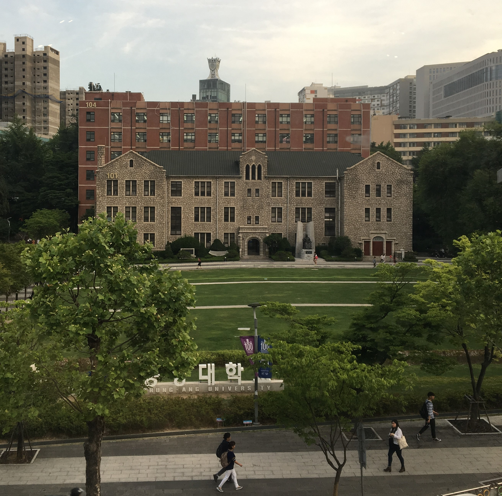

CUSCM


전 중앙인이 드리는
온라인 목요예배
매주 목요일 6시 중앙대생들은 뜨거운 예배와 찬양을 드리고 있습니다. 예배는 재학생들이 진행하며, 말씀은 동문 목사님들께서 매주 돌아가며 전해주십니다. 동아리에 속하지 않더라도, 예배를 드리기 원하시는 분 누구나 함께하실 수 있습니다.
*2020년부터는 동아리 비대면 수칙을 따라 온라인 예배만을 진행하고 있으니 각자의 자리에서 유튜브를 이용해 참여해주시기 바랍니다.

말씀으로 돌아가자
Bible College
목요예배는 하나님을 만나고 경험하는 시간이라면, Bible
College(BC)는 하나님에 대해 더 알아가고 대화를 나누는
시간입니다. 학년에 따라 다양한 반이 있으며, 중앙대
동문 목사님과 강사님께서 강의를 진행해주십니다. 졸업하는
선배들이 대학생활 중 가장 그리운 순간으로 꼽는 시간이기도
합니다.
매주 화요일 6시, zoom으로 진행됩니다.

하루의 시작을 하나님과 함께
아침 기도회
매일 아침 말씀과 기도로 하루를 시작할 수 있는 시간
입니다. 묵상(10분)-설교(20분)-개인기도(자유)의 순서로
진행되고, 설교는 생명의 삶(두란노) 본문으로 진행되고 있습니다.
월요일~금요일 오전 8시, zoom으로 진행됩니다.